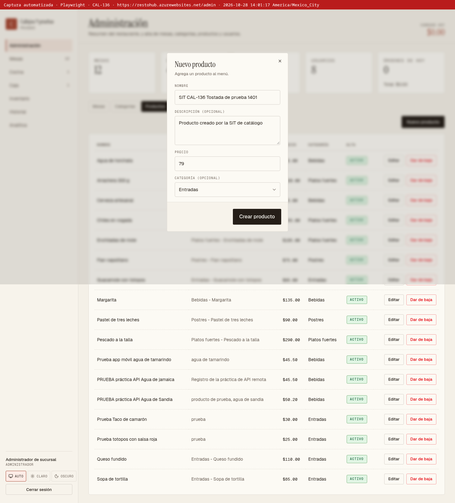
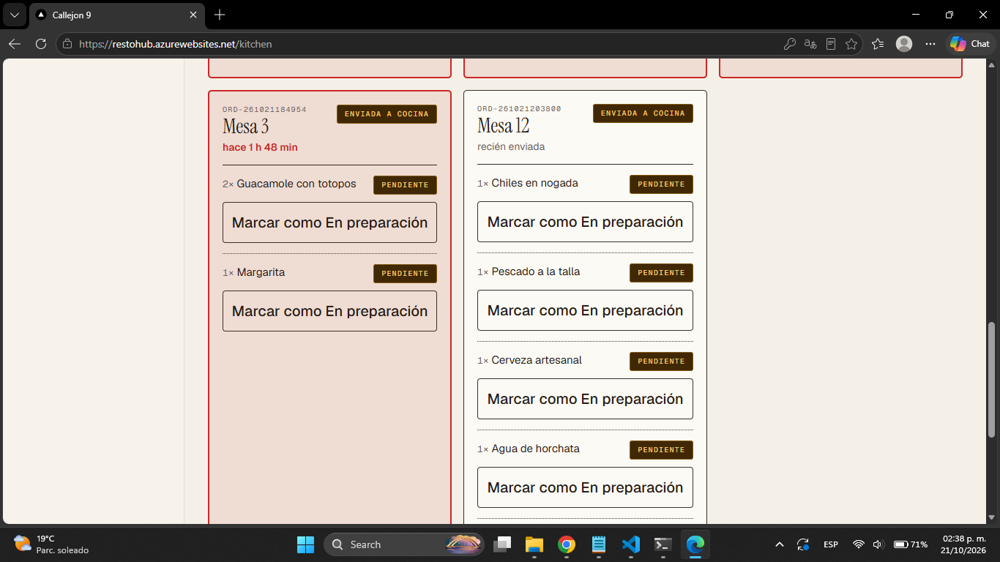
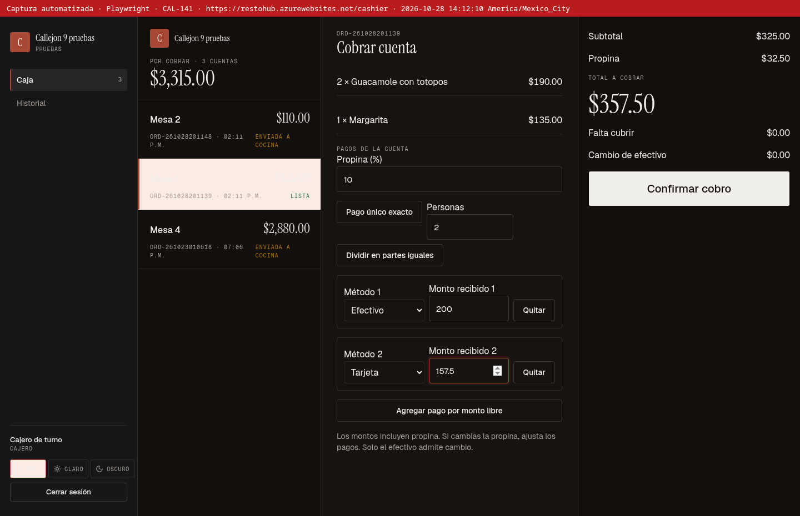
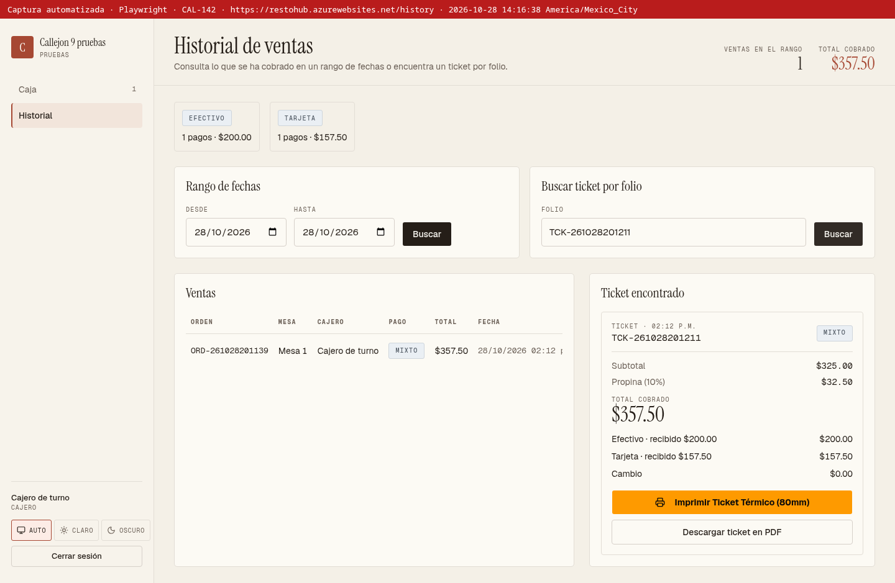
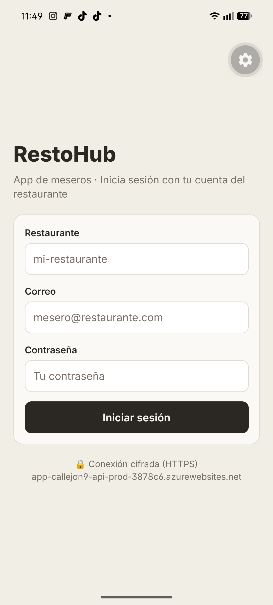
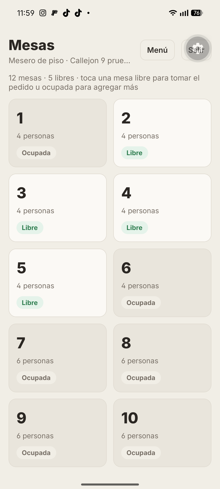
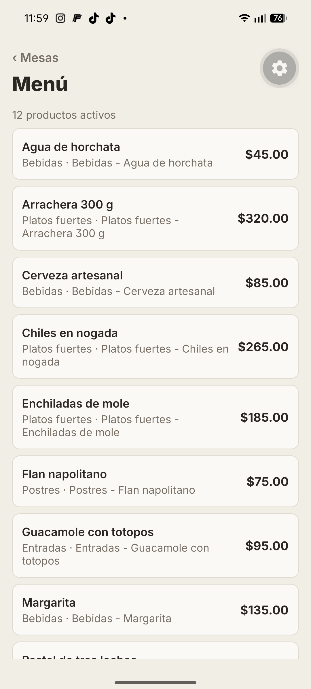
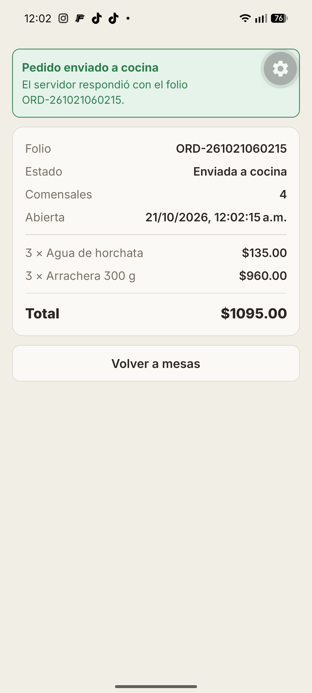

El documento sigue el orden de la guía. La parte A determina metodología, herramientas y normas y describe las dos apps móviles. La parte B entrega los manuales, la versión estable integrada y la evidencia de versionamiento. Cada afirmación se puede comprobar en el repositorio público o en el servicio desplegado; las cifras se midieron el 25 de noviembre de 2026 sobre main en el commit 66f32e0 (19 de noviembre).
| Punto de la guía | Dónde se cumple | Estado |
|---|---|---|
| A · Objetivos del desarrollo | Sección 01 | ✔ Cumple |
| A · Metas y alcances | Sección 02 | ✔ Cumple |
| A · Requerimientos funcionales y no funcionales | Sección 03 (21 RF y 12 RNF con su evidencia) | ✔ Cumple |
| A · Justificación de la metodología | Sección 04 (Scrum con flujo Kanban en Linear) | ✔ Cumple |
| A · Justificación de herramientas | Sección 05, por proceso: comunicación, desarrollo, CI y monitoreo | ✔ Cumple |
| A · Normas, estándares, leyes y regulaciones | Sección 06 (resumen del documento completo CAL-69) | ✔ Cumple |
| A.3 · App móvil: seguridad | Sección 07.4 | ✔ Cumple |
| A.3 · App móvil: APIs de terceros | Sección 07.5 (Expo Push, FCM, APNs) | ✔ Cumple |
| A.3 · App móvil: servicios en la nube | Sección 07.6 (Microsoft Azure y Expo) | ✔ Cumple |
| A.3 · Enlace del repositorio en funcionamiento | Sección 07.7 y 12 | ✔ Meseros ◐ Comensales |
| B.1 · Manuales del software | Secciones 08, 09 y 10 | ✔ Cumple |
| B.2 · Versión estable integrada | Sección 11 | ◐ Falta la etiqueta de versión |
| B.3 · Evidencia de código y documentación versionados | Sección 12 | ✔ Cumple |
feat/app-clientes-offline sin commit: falta subirla y abrir su pull request. Tampoco existe todavía una etiqueta de versión (git tag) ni un release en GitHub que marque la versión estable. La sección 11 da el procedimiento para cerrar ambos puntos.RestoHub es una plataforma SaaS para que varios restaurantes administren su operación en una misma aplicación: personal, mesas, menú, comandas, cocina en tiempo real, caja, tickets, inventario y analítica. Nació como la migración del sistema Callejón 9, escrito en Flask con MongoDB, a una arquitectura multi-restaurante con Java y PostgreSQL.
Desarrollar y liberar en la nube una plataforma multi-restaurante que cubra la operación diaria de un restaurante desde la web y desde el teléfono, y que garantice en la base de datos que ningún restaurante pueda leer ni modificar los datos de otro.
| # | Objetivo | Cómo se mide |
|---|---|---|
| OE1 | Aislar los datos de cada restaurante con Row Level Security (RLS) de PostgreSQL, sin depender de filtros en el código. | TenantIsolationTest en verde en cada corrida de CI y scripts/verify-rls.sql ejecutado como el rol de la aplicación. |
| OE2 | Cubrir el flujo completo de servicio: mesa → comanda → cocina → cobro → ticket → historial. | Pruebas SIT CAL-133 a CAL-145 y UAT por módulo en docs/pruebas/. |
| OE3 | Llevar la operación al teléfono con dos apps: una para meseros y administradores y otra para comensales. | Apps en mobile/ y mobile-clientes/ con pruebas unitarias y de integración contra Azure. |
| OE4 | Integrar cada cambio con un pipeline que compile y pruebe todos los componentes. | Corridas de GitHub Actions y Jenkins sobre cada pull request y sobre main. |
| OE5 | Publicar el sistema en Microsoft Azure con infraestructura declarada como código y secretos fuera del repositorio. | Terraform en infra/terraform/; API y web respondiendo con TLS. |
| OE6 | Cumplir las obligaciones legales y técnicas que aplican a un SaaS que maneja datos personales y cobros. | Matriz de obligaciones del documento CAL-69 (sección 06). |
El proyecto se organizó en cuatro fases de resultado (registradas en workflow/plan/roadmap.md y en el proyecto de Linear «Ruta a producción y entrega académica»). Cada una tiene una meta verificable.
| Fase | Meta | Estado al 25-nov |
|---|---|---|
| 1 · Base segura y estable | Rutas y roles críticos protegidos por pruebas, reglas de negocio validadas en backend y main compilable. | ✔ Cerrada |
| 2 · Plataforma reproducible y CI | Docker, imágenes de producción no root, pipeline en GitHub Actions y Jenkins, PostgreSQL real con Testcontainers. | ✔ Cerrada |
| 3 · Despliegue seguro y calidad exigible | Backend y web en Azure con PostgreSQL gestionado y Key Vault; paginación, zona horaria, checks de Jenkins en los PR. | ◐ En cierre: cobertura (CAL-18), contrato OpenAPI (CAL-55) |
| 4 · Entorno productivo observable | Logs centralizados, alarmas, respaldos con restauración probada y despliegue automático con rollback. | ◐ En curso: CAL-56, CAL-57, CAL-58 |
La replanificación del 6 de noviembre fija el cierre del alcance técnico el 11 de diciembre de 2026, con una capacidad de 80 puntos por ciclo de dos semanas (20 por integrante). La liberación del proyecto integrador corre del 1 al 5 de diciembre.
| Dentro del alcance | Fuera del alcance (con su motivo) |
|---|---|
| Alta de restaurantes y planes con límites · personal por rol · mesas · menú · comandas · cocina en tiempo real (WebSocket) · cobro con propina y pagos divididos · turnos de caja · ticket PDF · historial y analítica · inventario · menú QR público · app de meseros · app de comensales sin conexión · notificaciones push · despliegue en Azure. | Cobro recurrente con Mercado Pago (CAL-29, en curso) · facturación CFDI · delivery y rastreo · segundo factor TOTP · recuperación de contraseña (CAL-33) · impresión térmica · publicación en Google Play o App Store (requiere cuentas de desarrollador y firma propia). |
Cada requerimiento apunta a la parte del sistema que lo implementa. Los identificadores de pantalla son las rutas de la web (frontend/src/app) y las pantallas de las apps.
| ID | Requerimiento | Dónde |
|---|---|---|
| RF-01 | Registrar un restaurante con su administrador y plan (máx. 5 altas por IP por hora). | /signup |
| RF-02 | Iniciar sesión con restaurante, correo y contraseña; cerrar sesión en el servidor. | /login, app de meseros |
| RF-03 | Administrar planes y restaurantes de la plataforma. | /platform (SUPER_ADMIN) |
| RF-04 | Dar de alta, editar y desactivar personal por rol; no dejar al restaurante sin administrador. | /admin |
| RF-05 | Administrar categorías y productos; activar o desactivar productos. | /admin, app de meseros (ADMIN) |
| RF-06 | Administrar mesas e imprimir su código QR. | /admin |
| RF-07 | Abrir una mesa, capturar una comanda y enviarla a cocina. | /waiter, app de meseros |
| RF-08 | Agregar productos a una mesa ocupada y cancelar una comanda liberando la mesa. | /waiter/order/[id] |
| RF-09 | Ver en cocina las partidas en tiempo real y avanzarlas solo hacia adelante. | /kitchen |
| RF-10 | Cobrar con propina y pagos divididos; impedir modificar una orden mientras se cobra. | /cashier |
| RF-11 | Abrir y cerrar turnos de caja con su arqueo. | /cash-sessions |
| RF-12 | Generar el ticket en PDF y buscarlo por folio. | /history |
| RF-13 | Consultar ventas y analítica del día por restaurante y en su zona horaria. | /history, /analytics |
| RF-14 | Registrar movimientos de inventario. | /inventory |
| RF-15 | Mostrar el menú público por QR y recibir pedidos de la mesa sin cuenta. | /m/[slug]/[table] |
| RF-16 | Llamar al mesero desde la mesa. | Menú QR, app de comensales |
| RF-17 | Escanear el QR de la mesa desde la app de comensales. | ScannerScreen |
| RF-18 | Consultar el menú y armar un pedido sin conexión; enviarlo al volver la red. | offline/ de la app de comensales |
| RF-19 | Consultar «Mi pedido» con los pedidos enviados en las últimas 24 horas. | CartScreen |
| RF-20 | Recibir notificaciones push del seguimiento de solicitudes. | NotificationsScreen (app de meseros) |
| RF-21 | Paginar y ordenar los listados que crecen sin límite (órdenes y ventas). | API /api/v1/orders, /sales |
| ID | Atributo (ISO/IEC 25010) | Requerimiento | Evidencia |
|---|---|---|---|
| RNF-01 | Seguridad · confidencialidad | Aislamiento entre restaurantes impuesto por PostgreSQL con RLS en las 17 tablas de datos. | TenantIsolationTest |
| RNF-02 | Seguridad · autenticidad | JWT en cookie httpOnly, Secure, SameSite=Strict; token de 15 min con renovación rotada. | README, sección Backend |
| RNF-03 | Seguridad · resistencia | Bloqueo tras 5 fallos por cuenta o 20 por IP en 15 min (HTTP 429). | SIT CAL-169/CAL-176 |
| RNF-04 | Seguridad · integridad | Autorización por rol en el backend en cada endpoint (@PreAuthorize). | Matriz de autorización, 109 pruebas |
| RNF-05 | Seguridad · comunicación | Solo HTTPS en producción; HSTS y CSP con nonce en la web. | Cabeceras de restohub.azurewebsites.net |
| RNF-06 | Fiabilidad · tolerancia a fallos | La app de comensales funciona sin conexión y no duplica pedidos al reintentar. | outbox.test.ts |
| RNF-07 | Mantenibilidad · modularidad | Paquetes por funcionalidad; controller → service → repository. | backend/src/main/java/com/callejon9 |
| RNF-08 | Mantenibilidad · capacidad de prueba | Pruebas automáticas contra PostgreSQL 16 real, nunca H2, y pruebas E2E sobre el entorno desplegado. | Testcontainers en CI; Playwright (sección 11.2) |
| RNF-09 | Compatibilidad · interoperabilidad | API REST /api/v1 con errores RFC 7807 y contrato OpenAPI. | docs/api/openapi.json |
| RNF-10 | Portabilidad · adaptabilidad | Imágenes Docker no root (UID 10001) y despliegue en App Service. | scripts/verify-images.sh |
| RNF-11 | Usabilidad · accesibilidad | Interfaz en español, accesible con teclado y lector de pantalla (WCAG 2.1 AA). | Auditoría CAL-60 en curso |
| RNF-12 | Eficiencia · disponibilidad | Sondas de salud liveness y readiness; telemetría en Application Insights. | /actuator/health |
El equipo trabaja con Scrum, con un flujo Kanban visible en Linear para el estado de cada issue y prácticas DevOps de integración continua. Scrum se eligió frente a cascada y frente a Kanban puro por tres razones observadas durante el cuatrimestre, no supuestas:
main y desplegable, así que siempre hay algo que mostrar en una revisión.| Elemento | Cómo se aplica en RestoHub |
|---|---|
| Roles | Product Owner: Ludwin García Gaytán · Scrum Master y desarrollo móvil y frontend: Octavio Duarte Villavicencio · Backend e infraestructura: Valeria Mercado Serrano · Calidad y pruebas (QA): Braulio Hernández Mejía. |
| Product Backlog | Proyecto de Linear con issues que llevan contexto, alcance, criterios Dado/Cuando/Entonces y definición de terminado. |
| Sprint | Ciclos de Linear: semanales hasta el sprint 4, de dos semanas desde el 5. Ciclo 7: 6–19 nov (79 pts); ciclo 8: 20 nov–3 dic (77 pts). |
| Eventos | Planeación al inicio del ciclo, daily, revisión cada viernes contra el objetivo del sprint y retrospectiva. De las retrospectivas salieron el plan de bloqueos y el de reasignación por ausencia. |
| Flujo Kanban | Backlog → Todo → In Progress → In review → For test → Done. Máximo dos issues en progreso por persona. |
| Definición de terminado | workflow/product/definition-of-done.md: criterios cubiertos, pruebas nuevas, puertas de calidad en verde, sin debilitar RLS ni la autorización y evidencia honesta. |
| Integración continua | Cada cambio entra a main por pull request revisado por alguien distinto del autor y con el pipeline en verde. |
Las herramientas se agrupan por el proceso que sostienen. El criterio común fue usar planes gratuitos o el crédito de Azure for Students, y que cada herramienta deje registro consultable para la evaluación.
| Herramienta | Uso | Por qué |
|---|---|---|
| Linear | Backlog, ciclos, estimación, dependencias y discusión de cada issue. | Los ciclos y el flujo de estados son nativos; cada issue enlaza su rama y su PR, así que el rastreo issue → código → CI es automático. |
| GitHub Pull Requests | Revisión de código y discusión técnica sobre el diff. | La conversación queda junto al cambio y a sus checks de CI. |
Documentos en docs/ y workflow/ | Decisiones, planes, guiones de prueba y evidencia. | Versionados con el código: una decisión no se pierde en un chat. |
| Componente | Tecnología | Por qué |
|---|---|---|
| Backend | Java 21, Spring Boot 3.4, Spring Security, Spring Data JPA, Flyway | Transacciones declarativas, seguridad por rol madura y migraciones versionadas; permite publicar el tenant por transacción para RLS. |
| Base de datos | PostgreSQL 16 | Es el motor que impone RLS con FORCE ROW LEVEL SECURITY; ningún ORM ofrece esa garantía. |
| Web | Next.js 15, React 19, TypeScript estricto, TanStack Query, Tailwind CSS 4, shadcn/ui | El rewrite de Next sirve la API en el mismo origen: sin CORS y con cookie de primera parte. |
| Apps móviles | React Native con Expo (SDK 58), TypeScript | Un código para Android e iOS, mismo lenguaje que la web y pruebas en teléfono sin compilar con Expo Go. |
| Paquetes | pnpm (JS) y Maven Wrapper (Java) | Versiones fijadas por lockfile; nadie necesita instalar Maven. |
| Herramienta | Uso | Por qué |
|---|---|---|
| Git y GitHub | Repositorio público, ramas cortas y pull requests. | Historia auditable; el evaluador revisa todo sin pedir acceso. |
| Jenkins (VM privada en Azure) | Pipeline principal definido en Jenkinsfile: PostgreSQL, seguridad, backend, frontend, móvil e imágenes. Publica su estado en cada PR. | Servidor propio aprovisionado con Terraform, sin puertos entrantes (acceso por Tailscale) e identidad administrada de Azure en lugar de credenciales de larga duración. |
| GitHub Actions | .github/workflows/ci.yml con las mismas puertas, en paralelo. | Respaldo mientras Jenkins se consolida; su retiro está planeado en CAL-90. |
| Testcontainers | Levanta PostgreSQL 16 real en cada corrida. | H2 no demuestra RLS; una prueba que pasa en H2 no prueba el aislamiento. |
| Vitest, Testing Library, JUnit 5 | Pruebas unitarias de web, apps y backend. | Integradas al pipeline con cobertura. |
| Playwright | Pruebas de extremo a extremo (E2E): navegador real contra la web y la API de Azure, con varias sesiones y roles a la vez. | Prueba el sistema integrado tal como lo usa la gente, no componentes aislados; cada corrida guarda capturas y respuestas HTTP como evidencia. |
| Escaneo de secretos y de imágenes | scripts/security-scan.sh y scripts/verify-images.sh. | Ningún secreto llega al repositorio y las imágenes corren sin root. |
| Herramienta | Uso | Por qué |
|---|---|---|
| Terraform (azurerm) | Tres módulos: azure-backend, azure-frontend y azure-ci. | Infraestructura reproducible y revisable en PR; estado remoto con bloqueo. |
| Azure App Service | Aloja la API (JAR de Java 21) y la web (Next.js standalone). | TLS y dominio incluidos sin balanceador ni gateway adicional. |
| Azure Key Vault | Secretos del JWT y de la base, leídos por referencia. | Los secretos no viven en variables de texto plano ni en el repositorio. |
| Application Insights | Telemetría de peticiones, errores y dependencias de la API y la web. | Monitoreo sin agentes propios; se activa por variable de Terraform. |
| Spring Boot Actuator | /actuator/health con grupos liveness y readiness. | Sonda que usa App Service y que se verifica antes de cada demostración. |
| Presupuesto de Azure | Alertas de gasto y script scripts/azure-backend-power.ps1. | Protege el crédito de estudiante apagando la API cuando no se usa. |
El análisis completo, con la obligación exacta de cada disposición y si ya está implementada o planeada, está en docs/cal-69-normas-estandares-leyes.md. Aquí se resume qué aplica y por qué.
| Disposición | Tipo | Por qué aplica a RestoHub |
|---|---|---|
| Ley Federal de Protección de Datos Personales en Posesión de los Particulares (DOF 20-mar-2025) | Ley (México) | Se tratan nombres y correos del personal de cada restaurante. Exige aviso de privacidad, finalidades y derechos ARCO. Política por restaurante en CAL-62. |
| Código Fiscal de la Federación · CFDI 4.0 | Ley y regulación (SAT) | El ticket de consumo no es comprobante fiscal; la facturación queda fuera de alcance y así se declara. |
| PCI-DSS v4.0 | Estándar de la industria | RestoHub no captura ni almacena datos de tarjeta; el cobro recurrente se delega a Mercado Pago para quedar fuera del alcance de PCI. |
| Ley Federal de Protección al Consumidor y criterios de PROFECO | Ley (México) | Precios visibles y totales claros; la app de comensales muestra el total como estimado. |
| Ley Federal del Derecho de Autor | Ley (México) | Titularidad del código del equipo y respeto a las licencias de las dependencias. |
| ISO/IEC 25010:2023 | Estándar internacional | Modelo de calidad que organiza los RNF de la sección 03. |
| ISO/IEC/IEEE 12207 y 29148 | Estándar internacional | Procesos del ciclo de vida y forma de escribir requerimientos verificables. |
| OWASP API Security Top 10 (2023) y OWASP MASVS | Estándar de la industria | Autorización por objeto, límites de intentos y almacenamiento seguro en las apps. |
| WCAG 2.1 nivel AA | Estándar W3C | Accesibilidad de las pantallas operativas (auditoría CAL-60). |
| RFC 7807, RFC 6265 y RFC 6797 | Estándares IETF | Formato de errores de la API, cookies seguras y HSTS. |
| OpenAPI 3, Semantic Versioning y Conventional Commits | Convenciones técnicas | Contrato de la API, numeración de versiones y mensajes de commit. |
| Políticas de Google Play y Apple App Store | Regulación de plataforma | Permisos justificados (cámara), aviso de privacidad y firma propia antes de publicar las apps. |
El caso de estudio es el restaurante que ya usa RestoHub. El mesero trabaja de pie y con una mano ocupada, y el comensal quiere pedir sin esperar a que llegue alguien a la mesa, aunque la señal del lugar sea mala. Para cada uno se hizo una app con React Native y Expo, ambas clientes de la misma API.
com.callejon9.meseros, versión 1.0.0. Android e iOS.com.callejon9.clientes, versión 1.0.0 (1). Android.Cliente-servidor con cliente delgado: las apps no tienen backend propio; todo pasa por /api/v1 sobre HTTPS. La app de meseros no guarda datos de negocio. La de comensales guarda solo una copia del menú y su bandeja de salida para funcionar sin red.
| Capa | Meseros | Comensales |
|---|---|---|
| Presentación | App.tsx, src/screens/ (7 pantallas), src/ui/ | App.tsx, src/screens/ (4 pantallas), src/ui/ |
| Dominio y validación | src/validation/product.ts | src/domain/cart.ts, tableLink.ts |
| Datos sin conexión | — | src/offline/: almacén, copia del menú, bandeja de salida e historial |
| Fachadas de la API | src/api/auth.ts, waiter.ts, catalog.ts | src/api/public.ts |
| Transporte | src/api/client.ts: HTTPS, tiempo límite, renovación de sesión | src/api/client.ts: HTTPS, tiempo límite de 12 s, sin credenciales |
| Patrón | Dónde | Para qué |
|---|---|---|
| Fachada | src/api/*.ts en ambas apps | Las pantallas llaman createProduct() o sendOrder() sin conocer URLs ni métodos HTTP. |
| Gateway / cliente único | request() en client.ts | Todas las peticiones comparten tiempo límite y manejo de errores. |
| Adaptador | toApiError() | Convierte el ProblemDetail (RFC 7807) en un mensaje en español. |
| Single-flight | refreshSession() (meseros) | Varias respuestas 401 comparten una sola renovación, porque el servidor rota el token en cada uso. |
| Outbox (bandeja de salida) | offline/outbox.ts (comensales) | El pedido se guarda primero y se envía cuando hay red; solo se reintenta si no llegó al servidor, para no duplicar. |
| Caché con respaldo | offline/catalogCache.ts | Si la red falla se usa la última copia del menú; un 404 la borra. |
| Observador | setSessionExpiredHandler(), NetInfo | El transporte avisa a la interfaz cuando la sesión vence o cuando vuelve la red. |
| Máquina de estados | Tipo Screen en App.tsx | Navegación como unión discriminada: TypeScript impide estados imposibles. |
| Elemento | Meseros | Comensales |
|---|---|---|
| Framework | Expo SDK 58, React Native, TypeScript | Expo SDK 58, React Native 0.88, React 19.3, TypeScript 6 |
| Librerías nativas | expo-notifications, expo-device | expo-camera, AsyncStorage, NetInfo |
| Pruebas unitarias (Vitest) | 6 archivos · 69 pruebas en verde | 6 archivos · 32 pruebas en verde |
| Tipos | tsc --noEmit en Jenkins | tsc --noEmit |
| Extremo a extremo (Playwright) | CAL-139: lo que ve el mesero en el teléfono coincide con la web en Azure | — |
| Integración (SIT) | CAL-139 contra la API en Azure | Contra las rutas públicas del menú QR |
| Aceptación (UAT) | CAL-152 con un mesero en su teléfono | Pendiente |
Pruebas ejecutadas localmente con pnpm test el 25 de noviembre de 2026.
| Mecanismo | Cómo funciona | App |
|---|---|---|
| Solo HTTPS | La app se niega a arrancar con una URL http://. La excepción para la red local solo aplica en desarrollo (__DEV__); en una build de producción se ignora. | Ambas |
| Token fuera de JavaScript | El JWT viaja en cookies httpOnly, Secure y SameSite=Strict que guarda el almacén nativo del sistema operativo. | Meseros |
| Sesión corta y revocable | Token de 15 minutos, renovación con rotación y detección de reutilización; el logout revoca la sesión en el servidor. | Meseros |
| Sin enumeración de cuentas | Un solo mensaje para usuario inexistente, contraseña incorrecta o restaurante equivocado. | Meseros |
| Freno a fuerza bruta | 429 tras 5 fallos por cuenta o 20 por IP en 15 minutos; la app muestra el tiempo de espera. | Meseros |
| Autorización por rol | Solo entran WAITER y ADMIN; el backend lo exige de nuevo en cada endpoint. | Meseros |
| Aislamiento entre restaurantes | La app nunca envía el restaurante en peticiones de datos: el backend lo toma del JWT firmado y PostgreSQL lo impone con RLS. | Ambas |
| Mínimo de datos | Sin cuenta, sin cookies (credentials: 'omit') y sin datos personales. | Comensales |
| Permisos mínimos | Cámara solo mientras se escanea; micrófono bloqueado; no se guardan imágenes. | Comensales |
| Contraseña protegida | secureTextEntry y el campo se vacía en cuanto se envía. | Meseros |
| Secretos fuera del repositorio | .env y google-services.json ignorados por git; *.jks nunca se versiona. | Ambas |
| API | Proveedor | Uso |
|---|---|---|
| Expo Push Service | Expo | Entrega los avisos de seguimiento de solicitudes. La app obtiene su Expo push token y el servicio remoto (scripts/send-push.mts) envía el mensaje. |
| Firebase Cloud Messaging (FCM) | Transporte de las notificaciones en Android, configurado con google-services.json. | |
| Apple Push Notification service (APNs) | Apple | Transporte de las notificaciones en iOS. |
| API REST de RestoHub | Propia, en Azure | Autenticación, mesas, pedidos y catálogo (meseros); rutas públicas del menú QR (comensales). |
| Cámara y estado de red del sistema | Android / iOS vía Expo | Lectura del QR (expo-camera) y detección de conexión (NetInfo). |
La evidencia completa de las notificaciones push en Android e iOS está en la entrega Integración de notificaciones push (CAL-193, PR #127) y en docs/pruebas/notificaciones-push/.
| Servicio | Recurso | Función para las apps |
|---|---|---|
| Azure App Service (Linux) | API: app-callejon9-api-prod-3878c6, Java 21 | Servicio remoto que consumen las dos apps. |
| Azure Database for PostgreSQL | Servidor flexible B1ms, PostgreSQL 16 | Datos con RLS; el rol de la app no es dueño de tablas. |
| Azure Key Vault | Secretos del JWT y de la base | Firma de los tokens que usa la app de meseros. |
| Application Insights | Telemetría de la API | Errores y latencia de las peticiones de las apps. |
| Azure App Service | Web restohub.azurewebsites.net | Genera los QR que escanea la app de comensales. |
| Expo / EAS | Proyecto de Expo | Emisión de tokens push y envío de notificaciones. |
| Qué | Enlace |
|---|---|
| Repositorio (público) | github.com/LudwinGarcia1/callejon9-saas |
| App de meseros | github.com/LudwinGarcia1/callejon9-saas/tree/main/mobile |
| App de comensales | Pendiente de subir: rama feat/app-clientes-offline, carpeta mobile-clientes/ |
| Web en producción | restohub.azurewebsites.net |
La plataforma se abre en restohub.azurewebsites.net desde cualquier navegador moderno. Cada persona entra con el código de su restaurante (slug), su correo y su contraseña, y ve solo las pantallas de su rol. Si abre por URL una pantalla de otro rol, ve un aviso de permiso en lugar de la pantalla.
/signup escribe el nombre, el código (slug, por ejemplo callejon-9), el plan y los datos del administrador. Al terminar, la app te lleva al inicio de sesión./login escribe el código del restaurante, tu correo y tu contraseña. Tras 5 intentos fallidos la cuenta espera 15 minutos.| Rol | Pantalla | Qué puede hacer |
|---|---|---|
| Super-administrador | /platform | Ver los restaurantes registrados, sus planes y límites. |
| Administrador | /admin | Personal (alta por rol, edición, desactivación), categorías y productos, mesas y su QR, identidad del restaurante. No puede desactivarse a sí mismo ni dejar el restaurante sin administrador. |
| Administrador | /analytics, /inventory | Ventas y productos del día; entradas y salidas de inventario. |
| Mesero | /waiter | Ver mesas libres y ocupadas, abrir una mesa, agregar productos con notas, enviar a cocina, agregar a una mesa ocupada o cancelar la comanda. |
| Cocina | /kitchen | Ver las partidas en tiempo real y moverlas de «Pendiente» a «En preparación» y a «Listo». El mesero ve el cambio sin recargar. |
| Caja | /cashier, /cash-sessions | Abrir el turno, cobrar con propina y en uno o varios pagos, descargar el ticket PDF y cerrar el turno con su arqueo. Mientras se cobra, nadie puede modificar la orden. |
| Caja y administrador | /history | Buscar ventas y tickets por folio y descargar el PDF. |




Cada mesa tiene un QR que abre restohub.azurewebsites.net/m/{restaurante}/{mesa}. El comensal ve el menú, arma su pedido, lo envía a cocina y puede llamar al mesero, sin crear una cuenta. Es el mismo QR que lee la app de comensales.
| Mensaje | Qué significa | Qué hacer |
|---|---|---|
| Credenciales inválidas | Restaurante, correo o contraseña no coinciden. | Revisa el código del restaurante; el sistema no dice cuál dato falló, por seguridad. |
| Demasiados intentos | Se activó el freno a fuerza bruta. | Espera el tiempo indicado. |
| No tienes permiso | La pantalla es de otro rol. | Vuelve a tu pantalla de inicio. |
| Producto no disponible | Se desactivó mientras armabas la comanda. | Quítalo y elige otro. |




| Estado del pedido | Qué significa | Qué hacer |
|---|---|---|
| Esperando conexión | No hay red; el pedido está guardado en el teléfono. | Nada: se envía solo al volver la señal, o desliza para actualizar. |
| Sin confirmar | El servidor tardó y el pedido pudo haberse registrado. | Pregunta al mesero antes de «Enviar ahora», para no pedir dos veces. |
| Vencido | Lleva más de 30 minutos guardado. | Confirma si aún lo quieres o «Descartar». |
| Rechazado | Un producto se agotó o la mesa está inactiva. | Corrige el carrito, que se conserva, y vuelve a enviar. |
Este manual resume la puesta en marcha. El detalle paso a paso vive versionado en README.md, mobile/README.md, mobile-clientes/README.md e infra/terraform/*/README.md.
| Herramienta | Versión | Para qué |
|---|---|---|
| JDK (Temurin) | 21 | Backend |
| PostgreSQL | 16 | Ejecutar la app local (las pruebas usan Docker) |
| Docker | Compatible con Testcontainers | Pruebas del backend e imágenes |
| Node.js y pnpm | Node 20+ (24 recomendado) · pnpm 10 | Web y apps |
| Android SDK y JDK 17+ | API 24 o superior | Generar el APK |
| Terraform y Azure CLI | Terraform ≥ 1.9 · az | Infraestructura y despliegue |
| Variable | Componente | Descripción |
|---|---|---|
JWT_SECRET | Backend | Firma de los tokens; mínimo 32 bytes. En Azure se lee de Key Vault. |
DB_APP_PASSWORD, DB_OWNER_PASSWORD | Backend | Contraseñas de los dos roles de la base. |
APP_ALLOWED_ORIGINS | Backend | Orígenes https:// permitidos para el WebSocket; sin comodines. |
SPRING_PROFILES_ACTIVE=prod | Backend | Exige secretos reales; sin ellos el backend no arranca. |
EXPO_PUBLIC_API_URL | Apps | Raíz HTTPS del backend; se incrusta al compilar. |
EXPO_PUBLIC_EAS_PROJECT_ID | Meseros | Proyecto de Expo para obtener el token push. |
terraform -chdir=infra/terraform/azure-backend apply (y azure-frontend). Crea App Service, PostgreSQL, Key Vault y Application Insights.scripts/setup-db-azure.sql../mvnw -B package y az webapp deploy --type jar.scripts/deploy-frontend-azure.ps1 (Next.js standalone)./actuator/health en UP y scripts/verify-security-headers.ps1 sobre la web.| Tarea | Comando o lugar |
|---|---|
| Puertas de calidad | ./mvnw -B verify · pnpm lint · pnpm exec tsc --noEmit · pnpm build |
| Comprobar RLS | scripts/verify-rls.sql como callejon9_app: el cuarto chequeo debe fallar a propósito. |
| Encender o apagar la API | scripts/azure-backend-power.ps1 |
| Revisar errores y latencia | Application Insights del grupo de recursos. |
| Datos de demostración | scripts/seed-demo.ps1 |
| Documentación de la API | Swagger UI en local (/swagger-ui.html); apagada en prod. Contrato en docs/api/openapi.json. |
La versión estable es el estado de main en el commit 66f32e0 (19 de noviembre de 2026), con todos los componentes integrados y el pipeline de Jenkins en verde. Ese mismo código corre en Azure.
continuous-integration/jenkins/branch · 19-nov-2026 10:22 (hora del centro).| Componente | Versión | Dónde corre | Estado |
|---|---|---|---|
| Backend | Spring Boot 3.4 · 15 migraciones Flyway | Azure App Service | ✔ Desplegado |
| Web / PWA | Next.js 15.5 | Azure App Service | ✔ Desplegado |
| Base de datos | PostgreSQL 16 con RLS | Azure Database for PostgreSQL | ✔ Desplegado |
| App de meseros | 1.0.0 | Expo Go / development build | ✔ En main |
| App de comensales | 1.0.0 (versionCode 1) | APK de release | ◐ APK generado; código sin subir |
| Infraestructura | Terraform azurerm | Azure | ✔ En main |
La integración de los componentes se comprueba con 10 suites E2E de Playwright que abren el navegador, inician sesión con distintos roles y recorren la operación completa sobre la web y la API publicadas en Azure, no sobre un entorno local. Cada suite guarda capturas y respuestas HTTP en docs/pruebas/sit/CAL-*/ (98 capturas en total).
| Suite | Recorrido de extremo a extremo | Capturas |
|---|---|---|
| CAL-133 · Autenticación | Login, cuenta inexistente, logout, sesión de cocina abierta más de 15 min que renueva el token sola, y bloqueo con 429 tras seis contraseñas erróneas. | 12 |
| CAL-136 · Catálogo | El administrador da de alta un producto y el mesero lo ve; al darlo de baja con el producto en el carrito, no entra a la comanda. | 9 |
| CAL-137 · Mesas | Dos meseros en sesiones separadas ven la misma mesa ocupada y libre; abrir una mesa ya ocupada responde 409. | 12 |
| CAL-138 · Pedidos del mesero | Abrir, agregar y enviar a cocina; otro mesero no puede operar la orden (403); cantidad de 100 rechazada (400). | 15 |
| CAL-139 · App móvil | Mesas y productos que ve el mesero en la web, comparados con los del teléfono. | 20 |
| CAL-141 · Cobro y pagos | Mesero → cocina → caja: pago dividido con 10 % de propina libera la mesa; pago insuficiente da 422; la orden cobrada ya no acepta productos. | 11 |
| CAL-142 · Tickets | Buscar por folio y descargar el PDF; el folio de otro restaurante devuelve 404. | 4 |
| CAL-143 · Inventario | Cocina registra una salida y el administrador ve la existencia; un insumo dado de baja ya no acepta movimientos. | 10 |
| CAL-144 · Ventas y analítica | El cobro de CAL-141 aparece con el mismo total en el historial de caja, en el del administrador y en la analítica. | 4 |
| CAL-145 · Aislamiento | Un mesero intenta leer la orden y la mesa de otro restaurante: 404 y nada visible; el dueño sí la ve. | 1 |
ci/Jenkinsfile.pruebas-demo corre las suites E2E de CAL-138 y CAL-139 contra Azure dentro de la imagen oficial mcr.microsoft.com/playwright:v1.56.1-noble, junto con las pruebas unitarias. verificar.mjs revisa los códigos HTTP guardados y pone el build en rojo si alguno no es el esperado. Las demás suites se ejecutan a mano porque modifican datos del entorno compartido; CAL-133 queda fuera porque sus intentos fallidos bloquean el login durante 15 minutos. La automatización de los recorridos críticos con Selenium (CAL-28) sigue pendiente.| Etapa | Qué pasa | Automatizado |
|---|---|---|
| 1 · Rama | Rama corta feat/*, fix/*, docs/* o chore/* con la clave del issue. | — |
| 2 · Pull request | Jenkins y Actions corren seguridad, backend con PostgreSQL real, web, móvil e imágenes, y publican su estado en el PR. | ✔ Sí |
| 3 · Revisión | Otra persona revisa y aprueba; nadie fusiona su propio cambio. | — |
| 4 · Integración | Fusión a main; el pipeline vuelve a correr sobre el resultado. | ✔ Sí |
| 5 · Despliegue | JAR y web a Azure App Service con los scripts de la sección 10.4. | ◐ Manual con script (CAL-56 lo automatiza con rollback) |
| 6 · Verificación | Salud, cabeceras de seguridad y suites E2E de Playwright sobre Azure (sección 11.2). | ◐ Parcial: CAL-138 y CAL-139 en Jenkins |
| 7 · Versión | Etiqueta SemVer en main y release en GitHub con notas y APK adjunto. | ◐ Pendiente |
Todo el código y la documentación del proyecto viven en el repositorio público github.com/LudwinGarcia1/callejon9-saas, rama base main. El historial empieza el 29 de julio de 2026.
| Métrica (git y API de GitHub, 25-nov-2026) | Valor |
|---|---|
| Commits de trabajo con formato convencional | 331 de 338 (97.9 %) |
| Tipos de commit | feat 121 · docs 86 · fix 71 · test 32 · chore 13 · ci 7 · refactor 1 |
Commits que tocan documentación (*.md, docs/, workflow/) | 168 |
| Ramas en GitHub | 124 |
| Integrantes con commits | Los cuatro |
| Pruebas del backend | 545 métodos @Test en 100 archivos; 724 casos ejecutados al 28-oct (las parametrizadas cuentan varias veces) |
| Evidencia de pruebas versionada | 13 carpetas SIT (10 con su suite E2E de Playwright), 5 UAT y 6 UT en docs/pruebas/, con 157 capturas |
| Documento | Ruta |
|---|---|
| Guía del proyecto, arquitectura e instalación | README.md |
| Reglas del repositorio e invariantes | AGENTS.md |
| Hoja de ruta y replanificación | workflow/plan/roadmap.md |
| Producto y definición de terminado | workflow/product/ |
| Normas, estándares y leyes | docs/cal-69-normas-estandares-leyes.md |
| Contrato de la API | docs/api/openapi.json |
| Infraestructura y Jenkins | infra/terraform/*/README.md, infra/jenkins/README.md |
| Apps móviles | mobile/README.md, mobile-clientes/README.md |
| Entregables anteriores | docs/entregas/ |
Cada rama lleva la clave del issue de Linear (fix/cal-195-…) y el commit y el PR la citan, así que cualquier cambio se rastrea del requerimiento al código, a su revisión y a su corrida de CI.
Scrum con integración continua resultó adecuado para un equipo de cuatro personas con tiempo parcial y un alcance que cambió dos veces en el cuatrimestre. Los ciclos de Linear absorbieron esos cambios, y el pipeline evitó que la velocidad debilitara la garantía central: un cambio que dejaba una tabla sin aislamiento entre restaurantes no pasó la integración.
Las dos apps móviles muestran que una misma API puede servir a usuarios muy distintos. La app de meseros confía en el servidor para todo y por eso no guarda datos. La de comensales no tiene cuenta y debe funcionar con mala señal, así que guarda el menú y una bandeja de salida que no duplica pedidos. En ambas, la seguridad sigue en el backend y en PostgreSQL, no en el teléfono.
Quedan tres pendientes para que la liberación sea completa: subir la app de comensales por pull request, etiquetar la versión v1.0.0 con su release, y automatizar el despliegue con rollback (CAL-56). Además, las rutas públicas del menú QR no tienen límite de peticiones por IP, a diferencia del login y del alta; conviene agregarlo antes de abrir la app de comensales a más usuarios.